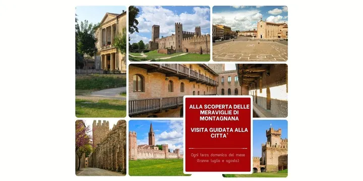

da dom 18 gen a dom 20 dic
Alla scoperta delle meraviglie di Montagnana
Ogni terza domenica del mese, tranne luglio e agosto, partirà dall'Ufficio Turistico di Montagnana un tour guidato in cui, con una guida turistica abilitata dell'Associazione Murabilia potrete scoprire gli aspetti più suggestivi di uno dei borghi medievali più belli d'Italia e…
 Indicazioni
Indicazioni
- Costi e prenotazioni
- Costo non indicato · Prenotazione non indicata
- Programma
- Programma da verificare. Apri la fonte ufficiale per orari e possibili aggiornamenti.
- In caso di maltempo
- Nessuna indicazione specifica pubblicata.
- Note
- Acquisito automaticamente dalla fonte.
L’EVENTO
Descrizione completa
Visita guidata della città murata.
Ogni terza domenica del mese, tranne luglio e agosto, partirà dall'Ufficio Turistico di Montagnana un tour guidato in cui, con una guida turistica abilitata dell'Associazione Murabilia potrete scoprire gli aspetti più suggestivi di uno dei borghi medievali più belli d'Italia e meglio conservati d'Europa.
Il percorso toccherà il Castello di San Zeno, cuore più antico della città, scenderà poi nel vallo, un tempo fossato acqueo a protezione della città e ora verdeggiante prato, per una sosta che consentirà l'illustrazione di Villa Pisani-Placco, progettata da Andrea Palladio. La passeggiata proseguirà lungo la cinta muraria trecentesca, voluta dai Carraresi e magnificamente conservata, fino a raggiungere la Rocca degli Alberi, che nel 1362 concluse i lavori di fortificazione.
Ci si dirigerà poi verso le tappe finali del percorso, illustrando chiese e palazzi realizzati durante la dominazione veneziana, e si raggiungerà Piazza Vittorio Emanuele II, circondata da palazzi nobiliari. Il percorso guidato si concluderà con l'illustrazione del Duomo di S. Maria Assunta, che custodisce opere di Paolo Veronese, Giorgione, Buonconsiglio (la visita di svolgerà anche internamente, se non saranno in corso celebrazioni religiose).
Prenotazione obbligatoria fino a esaurimento posti disponibili.
IL PROGRAMMA
Programma e orari
Appuntamenti raccolti dalle fonti elencate. Dove manca un orario, non è ancora disponibile in questa scheda.
Programma pubblicato
- 2026-01-18 — 2026-01-18 · 15:30:00
- 2026-02-15 — 2026-02-15 · 15:30:00
- 2026-03-15 — 2026-03-15 · 15:30:00
- 2026-04-19 — 2026-04-19 · 15:30:00
- 2026-05-17 — 2026-05-17 · 15:30:00
- 2026-06-21 — 2026-06-21 · 15:30:00
- 2026-09-20 — 2026-09-20 · 15:30:00
- 2026-10-18 — 2026-10-18 · 15:30:00
- 2026-11-15 — 2026-11-15 · 15:30:00
- 2026-12-20 — 2026-12-20 · 15:30:00
INFORMAZIONI UTILI
Prima di partire
- Controllare la fonte prima di partire.
ORGANIZZAZIONE